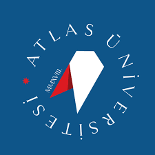

Eğitim

İstanbul Atlas Üniversitesi
Bilgisayar Mühendisliği (Lisans) | Eylül 2023 - Haziran 2027
3. sınıf öğrencisi olarak akademik eğitimime devam etmekteyim. Kulüp faaliyetleri ve teknik gelişim odaklı projelerle üniversite hayatımı destekliyorum.
Ek Eğitimler

Akbank Gençlik Akademisi - Siber Güvenlik Analisti Programı
Ocak 2026 - Halen
18 haftalık yoğun bir eğitim kapsamında siber güvenlik prensipleri, ağ yönetimi ve Linux sistemleri üzerine teknik uzmanlık kazandım. Cisco Networking Academy onaylı sertifikalar ve dijital rozetler elde ediyorum.

Yapay Zeka ve Teknoloji Akademisi - Veri Bilimi Bursiyeri Programı
Aralık 2025 - Halen
Türkiye genelinde 31.700 aday arasından seçilen 1.500 bursiyerden biri olarak yoğun bir veri bilimi programına kabul edildim. Program kapsamında Google Advanced Data Analytics Profesyonel Sertifikası eğitim sürecini yürütüyorum.